Chương 2 — Tiểu hội Thái Nam Sơn Cốc
55 đoạn · 2 nhánh xuất thân · chơi trọn tới kết · đã chạy trên khổ điện thoại
1. Em đã làm gì
Em xoá bản Chương 2 sai canon cũ, viết lại toàn bộ theo đúng nguyên tác Phàm Nhân Tu Tiên, rồi tự chơi thật cả hai nhánh trên khổ iPhone để chắc không có chỗ nào kẹt.
2. Chơi thử — ảnh chụp thật
Mỗi ảnh dưới đây là một màn hình thật, chụp trên khổ iPhone 390×844, sau khi bấm tay qua từng lựa chọn từ đầu Chương 1.
Nhánh tán tu
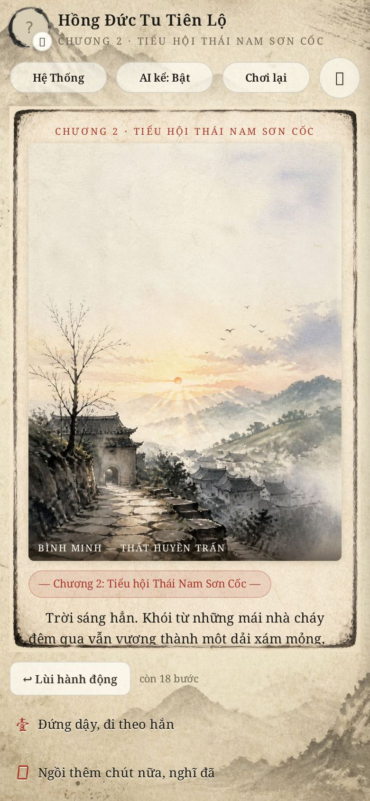
Mở đầu: kiếm linh chỉ cho thấy Hàn Lập đang lên đường về Gia Nguyên thành.
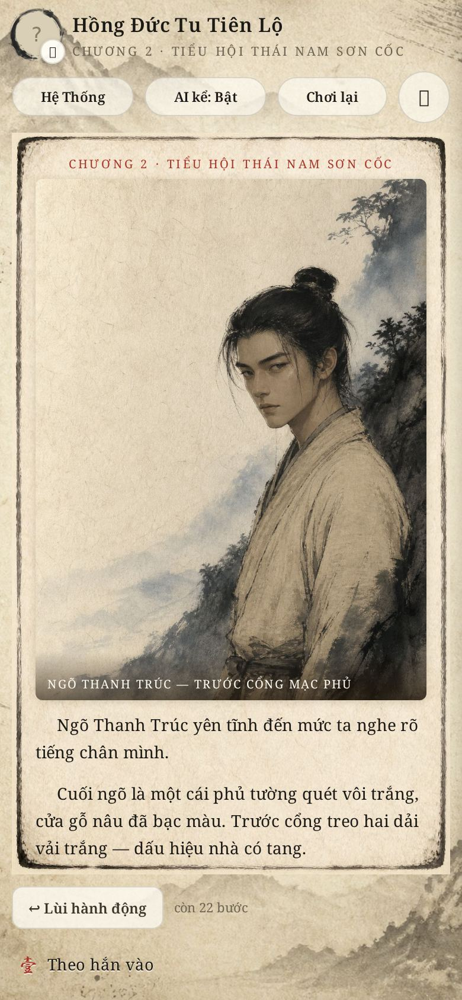
Trước cổng Mạc phủ — hai dải vải trắng.
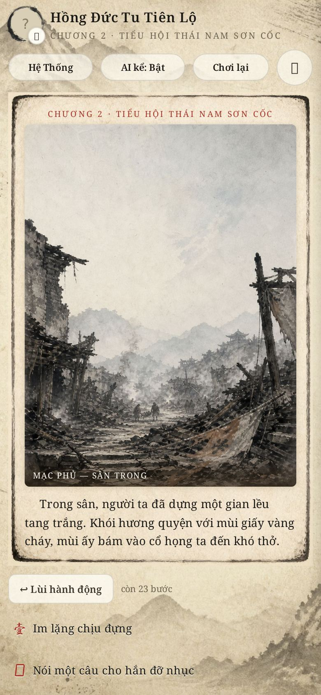
Tang lễ: người khinh, người không.
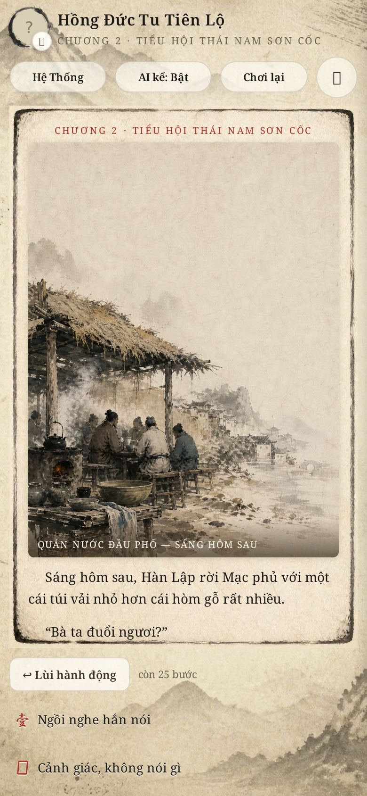
Vạn Tiểu Sơn — người dẫn đường, kẻ đã từng “đứng ngoài nhìn” bốn năm.
Lần đầu thấy người ta bay. Đây là câu then chốt của cả chương.
“Bạc thì về chợ Gia Nguyên mà mua rau.”
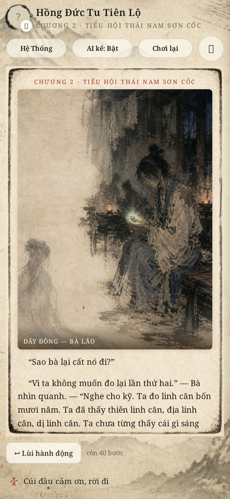
Đo linh căn: viên đá sáng trắng.
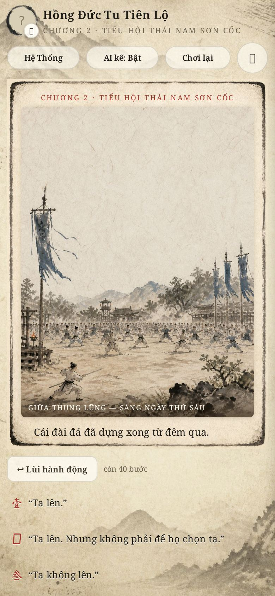
Hội tuyển của ba tông môn.
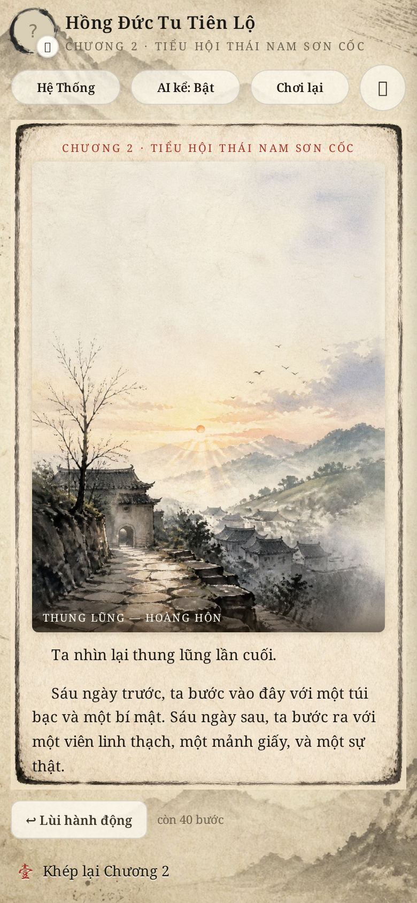
Kết chương — nhìn lại thung lũng.
Nhánh môn phái
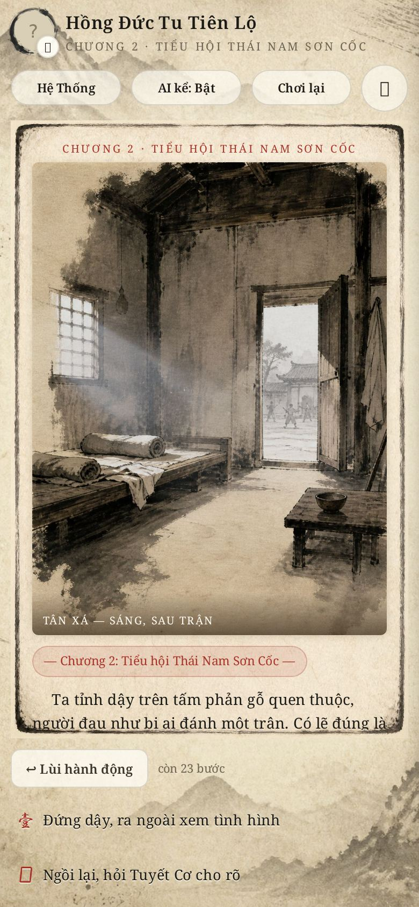
Tỉnh dậy sau trận, nghe tin Mạc Đại Phu mất.
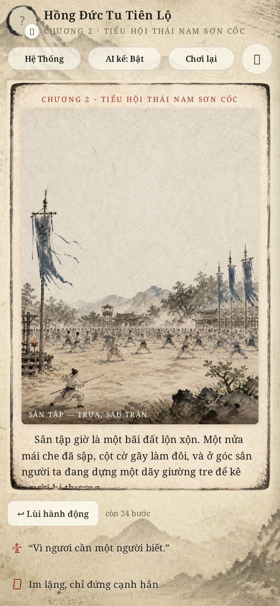
Hàn Lập kể chuyện Trường Xuân Công.
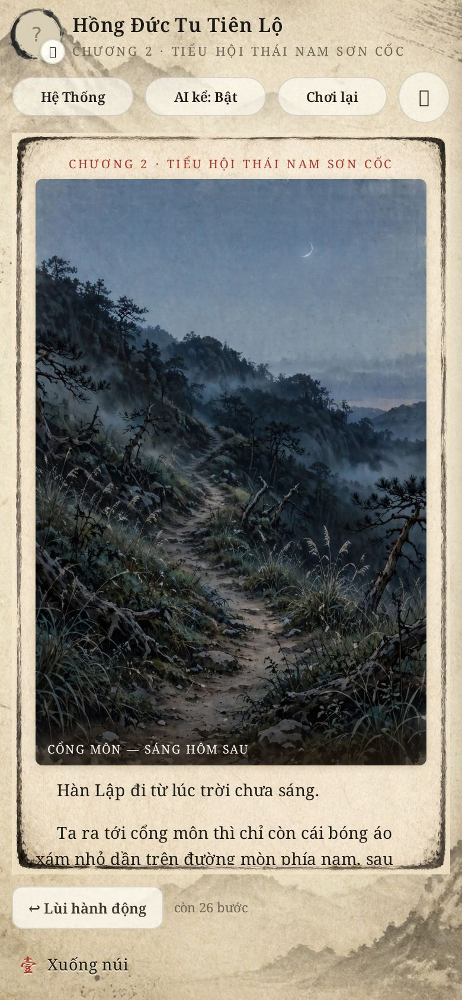
Hàn Lập đi trước, không từ biệt.
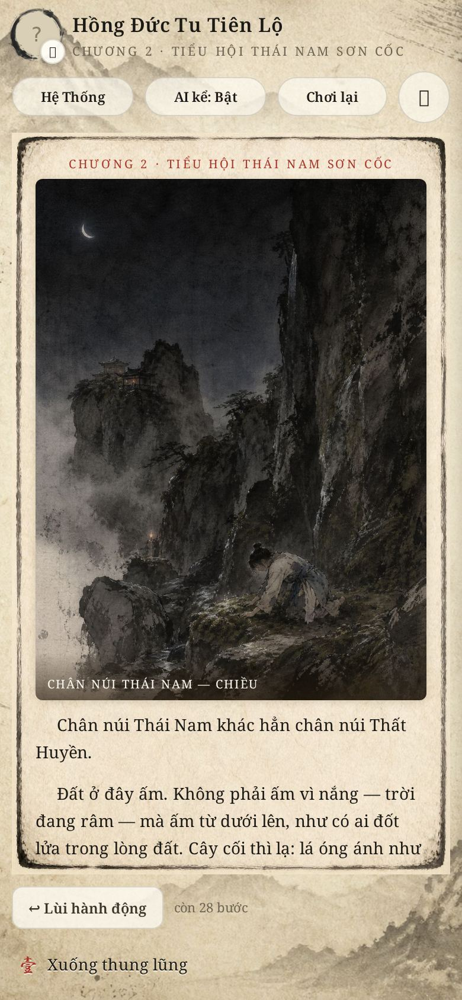
Chân núi Thái Nam — đất ấm, linh khí bay.
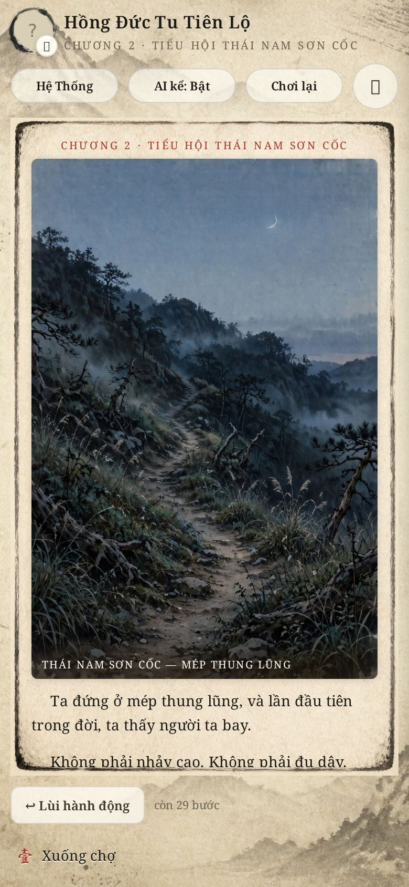
Cũng cảnh thấy người bay, nhưng lối vào khác.
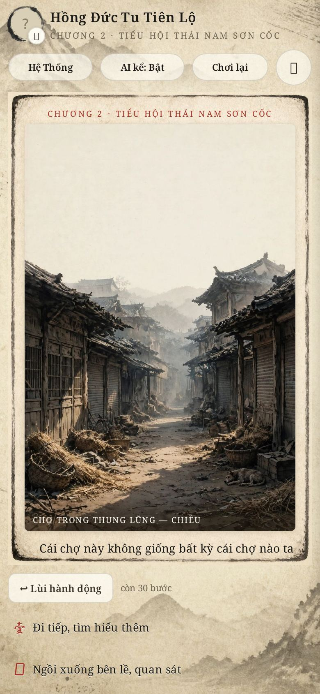
Chợ tu sĩ — bạc không mua được gì.

Hội tuyển — ba tông môn cùng một lúc.

Cùng một cảnh đo linh căn, lối vào khác.

Kết chương, nhánh môn phái.
3. Những gì em kiểm, không phải đoán
| Việc kiểm | Kết quả |
|---|---|
| Số đoạn | 55 |
| Lựa chọn | 72 |
| Ảnh dùng | 23 |
| Đoạn cụt (không tới được kết) | 0 |
| Vòng lặp trong đồ thị đoạn | 0 |
| Đích trỏ vào đoạn không tồn tại | 0 |
| Ảnh thiếu trên đĩa | 0 |
| Lượt chơi ngẫu nhiên (Python, mỗi nhánh) | 300 |
| Lượt chơi ngẫu nhiên (JS, mỗi nhánh) | 200 |
| Test Python | 176 đạt, 0 hỏng |
| Test JS | 160 đạt, 0 hỏng |
| Tràn ngang ở 320 / 390 / 768 px | 0 px |
4. Một chỗ anh cần biết: ảnh
Em không vẽ được ảnh mới. Cả bốn khoá Gemini đều trả lỗi hết hạn mức (429), nên em phải dùng lại 23 ảnh đã có trong kho.
| Cảnh chương 2 | Ảnh đang dùng | Độ khớp |
|---|---|---|
| Bình minh Thất Huyền trấn | bc_binh_minh | Khớp |
| Trước cổng Mạc phủ | nv_han_lap | Khớp — Hàn Lập đứng trước cổng |
| Tang lễ Mạc phủ | bc_tan_hoang | Tạm — là cảnh đổ nát, không phải tang lễ |
| Gặp Vạn Tiểu Sơn | bc_quan_nuoc | Khớp |
| Thái Nam Sơn Cốc | bc_duong_mon_nui | Tạm — chưa có ảnh thung lũng hội |
| Chợ tu sĩ | bc_cho_03 | Khớp |
| Đo linh căn | nv_tuyet_co_do_du | Tạm — mượn ảnh nhân vật |
| Hội tuyển | bc_san_tap_ngay | Tạm — chưa có ảnh đài tuyển |
5. Chơi thử ngay
▶ Vào chơi — tới thẳng Chương 1Chơi hết Chương 1, ở màn kết bấm “Sang chương 2”. Nút giờ đã mở.